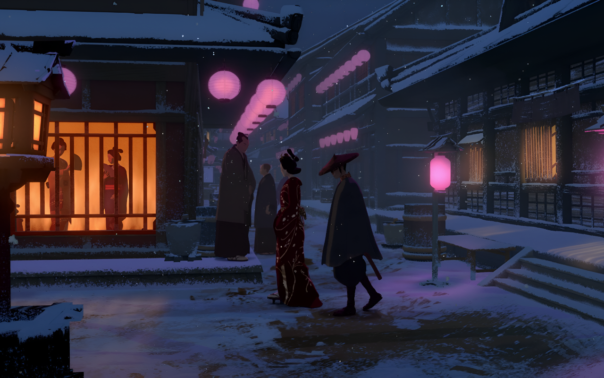

El vigilante
La noche era su aliada, la oscuridad envolvía sus movimientos en un manto impenetrable. Sus ojos, dos pozos negros sin fondo, escudriñaban cada detalle de su presa: una figura solitaria que caminaba desprevenida. La había estado observando durante días, conociendo su rutina, sus hábitos, sus manías. La había convertido en su obsesión.

Nunca visto
Sin embargo, no atacaba. Solo observaba. Disfrutaba del juego del gato y el ratón, de la tensión que crecía con cada minuto. Era un cazador paciente, meticuloso, implacable. No se conformaba con cualquier presa. Solo le interesaba el trofeo más valioso, la víctima más perfecta. Y esa noche, la había encontrado.
La culminación
La figura solitaria se giró bruscamente, buscando en vano la fuente de la amenaza. Pero no vio nada. Solo la oscuridad, el silencio, la soledad. El vigilante sonrió. La presa estaba acorralada. El juego estaba a punto de terminar. La tensión era palpable. La víctima, aterrorizada, intuía que algo terrible estaba a punto de ocurrir. El vigilante, con una mirada gélida y calculadora, se preparaba para dar el golpe final. Un desenlace inevitable, producto de una obsesión enfermiza que solo podía terminar en tragedia